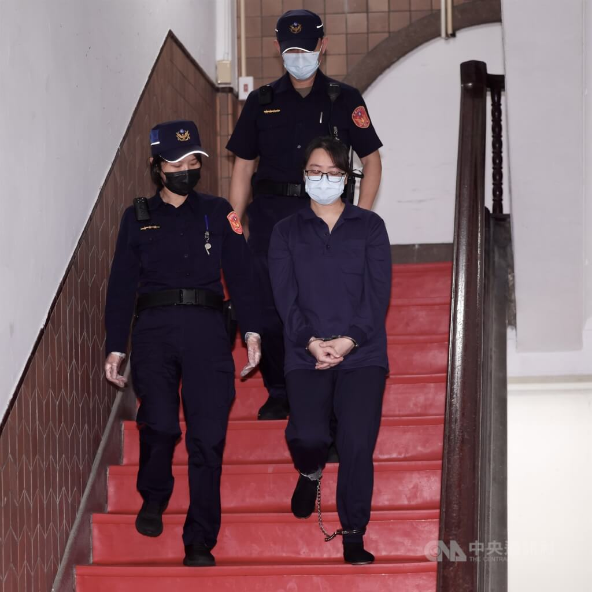
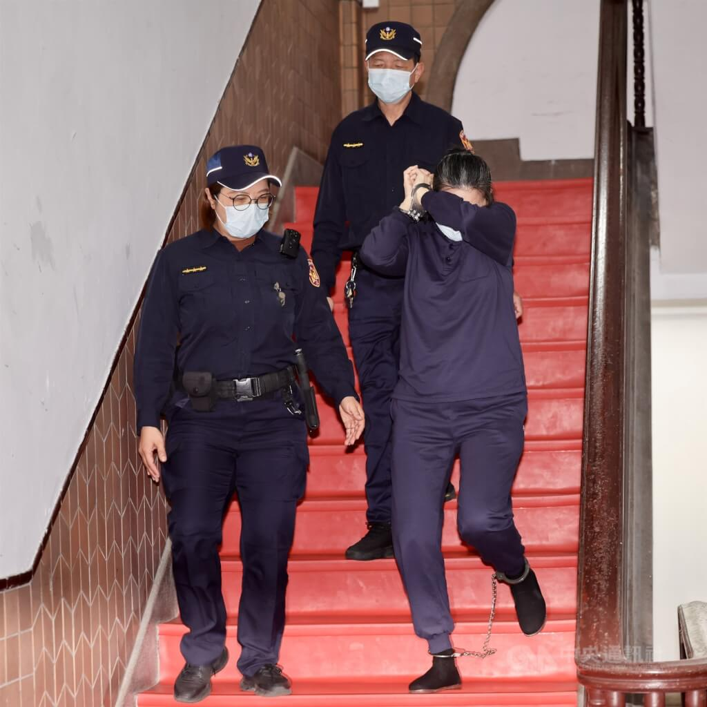
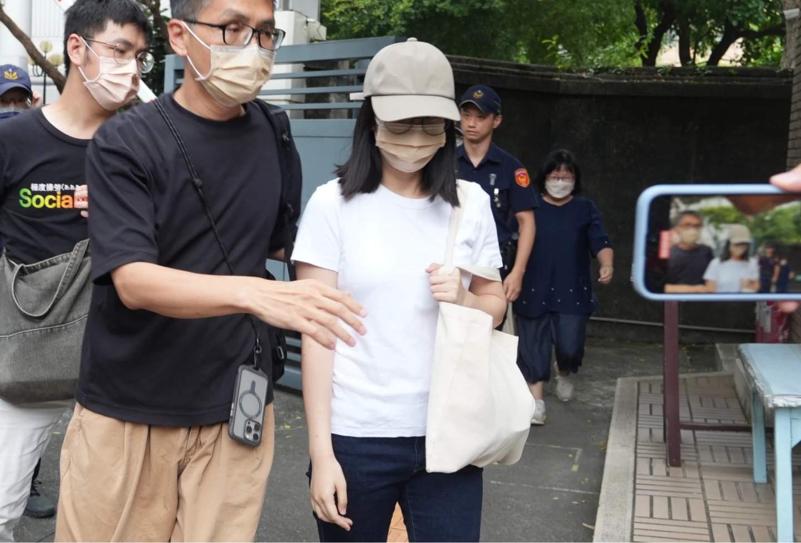

守
童
KAIKAI CASE · PEOPLE被送去的，是一個一歲的孩子
案件簡介與三名案件關係人
剴剴是一名一歲多的男童。2023年，他在收出養等待期間經兒福聯盟安排，由劉彩萱提供全日居家托育。法院認定，自2023年9月1日至12月23日，剴剴遭受長期、反覆的不當對待與凌虐；12月24日送醫後不治。本頁將直接加害主案與社工另案分開呈現，不以同一標籤混同不同法律責任。

照片：中央社檔案照片｜來源主要照顧者｜直接加害主案劉彩萱
無期徒刑・褫奪公權終身｜定讞法院認定，她對剴剴施以長期、反覆且密集的非人道虐待，將無反抗能力的幼兒視為宣洩情緒與凌虐取樂的工具。
一審｜2025.05.13最高法院｜2026.07.23 定讞

照片：中央社檔案照片｜來源共同照顧場域｜共同犯行劉若琳
有期徒刑18年｜定讞法院認定，她在共同生活與照顧場域中執行、看管或監督相關行為，對照片與訊息呈現的對待方式並非毫不知情，仍參與共同犯行。
一審｜2025.05.13最高法院｜2026.07.23 定讞

照片：知新聞｜來源兒盟收出養社工｜另案被告陳尚潔
一審過失致死2年｜非確定判決臺北地院一審認定，她掌握剴剴的成長、照顧轉換與訪視資訊，也能進入托育場域查核；面對多項重大異常，未進一步查證、提高訪視或依法通報。偽造文書部分一審無罪。
身分｜兒盟收出養社工北院114年度訴字第51號
程序提醒：劉彩萱、劉若琳主案已定讞；陳尚潔部分呈現臺北地院一審判決認定，非確定判決，應保留後續審級與無罪推定的程序位置。
責
鏈
THE BROKEN SAFETY NET誰看見了剴剴？
三方權責與跨系統資訊關係樹
不是「沒有人管剴剴」，而是不同系統都曾在某個階段看見這個孩子，卻各自只掌握自己那一部分資訊。因此，制度檢討不能只問單一人做了什麼，也必須追問：資訊有沒有在服務轉換時真正串起來？
新北樹鶯社福→兒福聯盟→臺北文山居托
三方看見的是同一個孩子；掌握的卻是家庭、收出養與托育監管的不同切面。
第一枝｜原生家庭／脆弱家庭新北樹鶯社福中心
家庭處境與早期風險承接脆弱家庭服務，接觸原生家庭照顧處境，並掌握孩子後續去向與服務轉介。
施盈如
樹鶯社福中心社工
第二枝｜收出養服務兒福聯盟
收出養與托育媒合承接收出養服務、安排等待期托育，並與外婆及托育人員形成三方家庭托育契約關係。
陳尚潔
兒盟收出養社工
第三枝｜居家托育監管臺北文山居托中心
保母登記、訪視與監督負責居家托育管理與訪視；在照顧現場辨認風險，必要時提高追蹤或啟動通報。
林心慈
文山居托中心訪視員
剴
關係樹的根與共同中心剴剴
資訊不應停在各自的紀錄裡，而應在危險發生以前匯流，形成能夠行動的完整風險圖像。
真正的制度追問不是「誰曾經管過」，而是：資訊有沒有串起來？
01｜交接孩子去了哪裡？服務轉換時，風險背景是否完整移交。
02｜共判警訊如何累積？不同時間的異常是否被共同判讀。
03｜行動誰啟動保護？查核、就醫、提高訪視與通報是否及時。
原創關係圖與視覺設計｜護童行動聯盟 · 依公開判決、法院新聞稿及主管機關調查資料重構